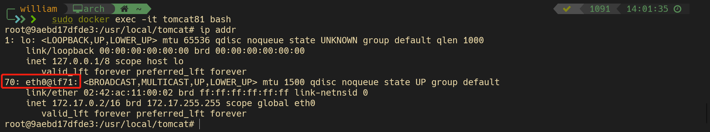
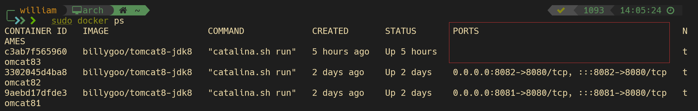

Docker 复杂安装详说
安装MySQL主从复制
主从复制的简介
在实际的生产中，为了解决Mysql的单点故障已经提高MySQL的整体服务性能，一般都会采用「主从复制」。
比如：在复杂的业务系统中，有一句sql执行后导致锁表，并且这条sql的的执行时间有比较长，那么此sql执行的期间导致服务不可用，这样就会严重影响用户的体验度。
主从复制中分为「主服务器（master）「和」从服务器（slave）」，「主服务器负责写，而从服务器负责读」，Mysql的主从复制的过程是一个「异步的过程」。
这样读写分离的过程能够是整体的服务性能提高，即使写操作时间比较长，也不影响读操作的进行。
为什么需要主从复制
- 在业务复杂的系统中，有这么一个情景，有一句sql语句需要锁表，导致暂时不能使用读服务，那么就很影响运行中的业务，使用主从复制，让主库负责写，从库负责读。这样，即使主库出现了锁表的情景，通过读从表也可以保证业务的正常运作。
- 做数据热备
- 架构的扩展。业务量越来越大，I/O访问频率过高，单击无法满足，此时做多库的存储，降低磁盘I/O访问的频率，提高单个机器的I/O性能
【MySQL锁表】
- 锁表的原因：一个程序执行了对表的insert、update或者delete操作还未commite时，另一个程序也对同一个表进行相同的操作，则此时会发生资源正忙的异常，也就是锁表。
- 锁表的原理：数据库使用独占式封锁机制，当执行上面的语句时，对表进行锁住，直到发生commite或者回滚或者退出数据库用户
- A程序执行了对 tableA 的 insert ，并还未 commite时，B程序也对tableA 进行insert 则此时会发生资源正忙的异常，就是锁表
- 锁表常发生于并发而不是并行（并行时，一个线程操作数据库时，另一个线程是不能操作数据库的，cpu 和i/o 分配原则）
什么是MySQL的主从复制
MySQL的主从复制是指数据可以从一个MySQL数据库服务器节点复制到一个多或个从节点。MySQL默认采用异步复制方式，这样从节点不用一直访问主服务器来更新自己的数据，数据的更新可以在远程连接上进行，从节点可以复制主数据中的所有数据库或特定的数据库，或特定的表。
主从复制的原理
首先放一张Mysql主从复制的原理图，总的来说Mysql的主从复制原理还是比较好理解的，原理非常的简单。

原理：
- master服务器将数据的改变记录二进制binlog日志，当master上的数据发生改变时，则将其改变写入二进制日志中
- slave服务器会在一定时间间隔内对master二进制进行探测其是否发生改变，如果发生改变，则开始一个I/OThread请求master二进制事件
- 同时主节点为每个I/O线程启动一个dump线程，用于向其发送二进制事件，并保存至从节点本地的中继日志中，从节点将启动SQL线程从中继日志中读取二进制日志，在本地重放，使得其数据和主节点的保持一致，最后I/OThread和SQLThread将进入睡眠状态，等待下一次被唤醒。
也就是说：
- 从库会生成两个线程，一个I/O线程，一个SQL线程
- I/O线程会去请求主库的binlog，并将得到的binlog写到本地的relay-log（中继日志）文件中
- 主库会生成一个log dump线程，用来给从库I/O线程传binlog
- SQL线程，会读取relay log文件中的日志，并解析成sql语句逐一执行
注意：
- master将操作的语句记录到binlog日志中，然后授予slave远程连接的权限（master一定开启binlog二进制日志功能；通常为了数据安全考虑，slave也开启binlog功能）
- slave开启两个线程：IO线程和SQL线程。其中，IO线程负责读取master的binlog内容到中继日志relay log里；SQL线程负责从relay log日志读取binlog内容，并更新到slave的数据库里，这样就能保证slave数据和master数据保持一致了
- MySQL复制至少需要两个MySQL的服务，当然MySQL服务可以分布在不同的服务器上，也可以在一台服务器上启动多个服务。
- MySQL复制最好确保master和slave服务器上的MySQL版本相同（如果不能满足版本一致，那么要保证master主节点的版本低于slave从节点的版本）
- master和slave两节点间时间需同步
具体步骤：
- 从库通过手工执行change mastar to 语句连接主库，提供了连接的用户一切条件（user、password、port、ip），并且让从库知道，二进制日志的起点位置（file名 position号）；start slave
- 从库的IO线程和主库的dump线程建立连接
- 从库根据change mastar to语句提供的file名和position号，IO线程向主库发起binlog的请求
- 主库dump线程根据从库的请求，将本地binlog以events的方式给从库IO线程
- 从库IO线程接收binlog events，并存放到本地relay-log中，传送过来的信息，会记录到master.info中
- 从库SQL线程应用relay-log，并且把应用过的记录到relay-log.info中，默认情况下，已经应用过的relay会自动被清理purge
Mysql的主从复制中主要有三个线程：master（binlog dump thread）、slave（I/O thread 、SQL thread），Master一条线程和Slave中的两条线程。
master（binlog dump thread）主要负责Master库中有数据更新的时候，会按照binlog格式，将更新的事件类型写入到主库的binlog文件中。
并且，Master会创建log dump线程通知Slave主库中存在数据更新，这就是为什么主库的binlog日志一定要开启的原因。
I/O thread线程在Slave中创建，该线程用于请求Master，Master会返回binlog的名称以及当前数据更新的位置、binlog文件位置的副本。
然后，将binlog保存在 「relay log（中继日志）」 中，中继日志也是记录数据更新的信息。
SQL线程也是在Slave中创建的，当Slave检测到中继日志有更新，就会将更新的内容同步到Slave数据库中，这样就保证了主从的数据的同步。
以上就是主从复制的过程，当然，主从复制的过程有不同的策略方式进行数据的同步，主要包含以下几种：
- 「同步策略」：Master会等待所有的Slave都回应后才会提交，这个主从的同步的性能会严重的影响。
- 「半同步策略」：Master至少会等待一个Slave回应后提交。
- 「异步策略」：Master不用等待Slave回应就可以提交。
- 「延迟策略」：Slave要落后于Master指定的时间。
对于不同的业务需求，有不同的策略方案，但是一般都会采用最终一致性，不会要求强一致性，毕竟强一致性会严重影响性能。
主从搭建步骤
新建主服务器容器实例3307
1
2
3
4
5
6
7
8
9
10
11sudo docker run -p 3307:3306 --name mysql-master \
-v /home/william/DYJ/mydata/mysql-master/log:/var/log/mysql \
-v /home/william/DYJ/mydata/mysql-master/data:/var/lib/mysql \
-v /home/william/DYJ/mydata/mysql-master/conf:/etc/mysql \
-e MYSQL_ROOT_PASSWORD=admin \
-d biarms/mysql:5.7.30-linux-arm64v8
# 日志路径：mysql-master/log
# 数据路径：mysql-master/data
# 配置路径：mysql-master/conf
# -e MYSQL_ROOT_PASSWORD=root 指定root账户密码为root进入
/mydata/mysql-master/conf目录下新建my.cnf1
2
3
4
5
6
7
8
9
10
11
12
13
14
15
16
17
18
19
20
21
22
23[mysqld]
## 设置server_id，同一局域网中需要唯一
server_id=101
## 指定不需要同步的数据库名称
binlog-ignore-db=mysql
## 开启二进制日志功能
log-bin=mall-mysql-bin
## 开启二进制日志使用内存大小（事物）
binlog_cache_size=1M
## 设置使用的二进制日志格式（mixed,statement,row）
binlog_format=mixed
## 二进制日志过期清理时间。默认值为0，表示不自动清理
expire_logs_days=7
## 跳过主从复制中遇到的所有错误或指定类型的错误，避免slave端复制中断
## 如：1062错误是指一些主键重复，1032错误是因为主从数据库数据不一致
slave_skip_errors=1062修改完配置后重启master实例
sudo docker restart mysql-master进入mysql-master容器
sudo docker exec -it b1ff5b9d1011 /bin/bashmysql -uroot -padminmaster容器实例内创建数据同步用户
CREATE USER 'william'@'%'IDENTIFIED BY 'admin';给用户授权
GRANT REPLICATION SLAVE,REPLICATION CLIENT ON *.* TO 'william'@'%';新建从服务器容器实例3308
1
2
3
4
5
6sudo docker run -p 3308:3306 --name mysql-slave \
-v /home/william/DYJ/mydata/mysql-master/log:/var/log/mysql \
-v /home/william/DYJ/mydata/mysql-master/data:/var/lib/mysql \
-v /home/william/DYJ/mydata/mysql-master/conf:/etc/mysql \
-e MYSQL_ROOT_PASSWORD=admin \
-d biarms/mysql:5.7.30-linux-arm64v8进入
/mydata/mysql-slave/conf目录下新建my.cnf1
2
3
4
5
6
7
8
9
10
11
12
13
14
15
16
17
18
19
20
21
22
23
24
25
26
27
28
29
30
31
32[mysqld]
## 设置server_id，同一局域网中需要唯一
server_id=102
## 指定不需要同步的数据库名称
binlog-ignore-db=mysql
## 开启二进制日志功能，以备Slave作为其他数据库实例的Master时使用
log-bin=mall-mysql-slave1-bin
## 开启二进制日志使用内存大小（事物）
binlog_cache_size=1M
## 设置使用的二进制日志格式（mixed,statement,row）
binlog_format=mixed
## 二进制日志过期清理时间。默认值为0，表示不自动清理
expire_logs_days=7
## 跳过主从复制中遇到的所有错误或指定类型的错误，避免slave端复制中断
## 如：1062错误是指一些主键重复，1032错误是因为主从数据库数据不一致
slave_skip_errors=1062
## relay_log配置中继日志
relay_log=mall-mysql-relay-bin
## log_salve_updates表示slave将复制事件写进自己的二进制日志
log_slave_updates=1
## slave设置为只读（具有super权限的用户除外)
read_only=1修改完配置后重启slave实例
sudo docker restart mysql-slave在主数据库中查看主从同步状态
1
2
3
4
5
6
7mysql> show master status;
+-----------------------+----------+--------------+------------------+-------------------+
| File | Position | Binlog_Do_DB | Binlog_Ignore_DB | Executed_Gtid_Set |
+-----------------------+----------+--------------+------------------+-------------------+
| mall-mysql-bin.000001 | 154 | | mysql | |
+-----------------------+----------+--------------+------------------+-------------------+
1 row in set (0.00 sec)进入mysql-salve容器
sudo docker exec -it mysql-slave /bin/bashmysql -uroot -padmin在从数据库中配置主从复制
1
2
3
4mysql> change master to master_host='10.211.55.3',master_user='william',master_password='admin',master_port=3307,master_password='mall-mysql-bin.000001',master_log_pos=154,master_connect_retry=30;
Query OK, 0 rows affected, 2 warnings (0.04 sec)
mysql>- master_host：主数据库的IP地址；
- master_port：主数据库的运行端口；
- master_user：在主数据库创建的用于同步数据的用户账号；
- master_password：在主数据库创建的用于同步数据的用户密码；
- master_log_file：指定从数据库要复制数据的日志文件，通过查看主数据的状态，获取File参数；
- master_log_pos：指定从数据库从哪个位置开始复制数据，通过查看主数据的状态，获取Position参数；
- master_connect_retry：连接失败重试的时间间隔，单位为秒。
在从数据库中查看主从同步状态
show slave status \G;1
2
3
4
5
6
7
8
9
10
11
12
13
14
15
16
17
18
19
20
21
22
23
24
25
26
27
28
29
30
31
32
33
34
35
36
37
38
39
40
41
42
43
44
45
46
47
48
49
50
51
52
53
54
55
56
57
58
59
60
61
62
63
64
65mysql> show slave status \G;
*************************** 1. row ***************************
Slave_IO_State:
Master_Host: 10.211.55.3
Master_User: william
Master_Port: 3307
Connect_Retry: 30
Master_Log_File:
Read_Master_Log_Pos: 154
Relay_Log_File: mall-mysql-relay-bin.000001
Relay_Log_Pos: 4
Relay_Master_Log_File:
Slave_IO_Running: No
Slave_SQL_Running: No
Replicate_Do_DB:
Replicate_Ignore_DB:
Replicate_Do_Table:
Replicate_Ignore_Table:
Replicate_Wild_Do_Table:
Replicate_Wild_Ignore_Table:
Last_Errno: 0
Last_Error:
Skip_Counter: 0
Exec_Master_Log_Pos: 0
Relay_Log_Space: 154
Until_Condition: None
Until_Log_File:
Until_Log_Pos: 0
Master_SSL_Allowed: No
Master_SSL_CA_File:
Master_SSL_CA_Path:
Master_SSL_Cert:
Master_SSL_Cipher:
Master_SSL_Key:
Seconds_Behind_Master: NULL
Master_SSL_Verify_Server_Cert: No
Last_IO_Errno: 0
Last_IO_Error:
Last_SQL_Errno: 0
Last_SQL_Error:
Replicate_Ignore_Server_Ids:
Master_Server_Id: 0
Master_UUID:
Master_Info_File: /var/lib/mysql/master.info
SQL_Delay: 0
SQL_Remaining_Delay: NULL
Slave_SQL_Running_State:
Master_Retry_Count: 86400
Master_Bind:
Last_IO_Error_Timestamp:
Last_SQL_Error_Timestamp:
Master_SSL_Crl:
Master_SSL_Crlpath:
Retrieved_Gtid_Set:
Executed_Gtid_Set:
Auto_Position: 0
Replicate_Rewrite_DB:
Channel_Name:
Master_TLS_Version:
1 row in set (0.00 sec)
ERROR:
No query specified
mysql>1
2
3# 此时从机的IO_Running/SQL_Running还未开始同步
Slave_IO_Running: No
Slave_SQL_Running: No在从数据库中开启主从同步
1
2
3
4mysql> start slave;
Query OK, 0 rows affected (0.01 sec)
mysql>查看从数据库状态发现已经同步
1
2
3
4
5
6
7
8
9
10
11
12
13
14
15
16
17
18
19
20
21
22
23
24
25
26
27
28
29
30
31
32
33
34
35
36
37
38
39
40
41
42
43
44
45
46
47
48
49
50
51
52
53
54
55
56
57
58
59
60
61
62
63mysql> show slave status \G;
*************************** 1. row ***************************
Slave_IO_State: Connecting to master
Master_Host: 10.211.55.3
Master_User: william
Master_Port: 3307
Connect_Retry: 30
Master_Log_File:
Read_Master_Log_Pos: 154
Relay_Log_File: mall-mysql-relay-bin.000001
Relay_Log_Pos: 4
Relay_Master_Log_File:
Slave_IO_Running: Connecting
Slave_SQL_Running: Yes
Replicate_Do_DB:
Replicate_Ignore_DB:
Replicate_Do_Table:
Replicate_Ignore_Table:
Replicate_Wild_Do_Table:
Replicate_Wild_Ignore_Table:
Last_Errno: 0
Last_Error:
Skip_Counter: 0
Exec_Master_Log_Pos: 0
Relay_Log_Space: 154
Until_Condition: None
Until_Log_File:
Until_Log_Pos: 0
Master_SSL_Allowed: No
Master_SSL_CA_File:
Master_SSL_CA_Path:
Master_SSL_Cert:
Master_SSL_Cipher:
Master_SSL_Key:
Seconds_Behind_Master: 0
Master_SSL_Verify_Server_Cert: No
Last_IO_Errno: 1045
Last_IO_Error: error connecting to master 'william@10.211.55.3:3307' - retry-time: 30 retries: 2
Last_SQL_Errno: 0
Last_SQL_Error:
Replicate_Ignore_Server_Ids:
Master_Server_Id: 0
Master_UUID:
Master_Info_File: /var/lib/mysql/master.info
SQL_Delay: 0
SQL_Remaining_Delay: NULL
Slave_SQL_Running_State: Slave has read all relay log; waiting for more updates
Master_Retry_Count: 86400
Master_Bind:
Last_IO_Error_Timestamp: 220814 13:31:06
Last_SQL_Error_Timestamp:
Master_SSL_Crl:
Master_SSL_Crlpath:
Retrieved_Gtid_Set:
Executed_Gtid_Set:
Auto_Position: 0
Replicate_Rewrite_DB:
Channel_Name:
Master_TLS_Version:
1 row in set (0.00 sec)
ERROR:
No query specified1
2
3
4Slave_IO_Running: Connecting
Slave_SQL_Running: Yes
# Slave_IO_Running: Connecting 提示需要对主从库进行 flush privileges主从复制测试
主机新建库->使用库->新建表->插入数据
1
2
3
4
5
6
7
8
9
10
11
12mysql> create database db01;
Query OK, 1 row affected (0.01 sec)
mysql> use db01;
Database changed
mysql> create table t1(id int,name varchar(20));
Query OK, 0 rows affected (0.02 sec)
mysql> insert into t1 values(1,'z3');
Query OK, 1 row affected (0.02 sec)
mysql>从机使用库->查看记录
1
mysql> use db01;
安装redis集群（大厂面试题-分布式存储案例）
Dockerfile 解析
Dockerfile 是什么
Dockerfile 是用来构建Docker镜像的文本文件，是由一条条构建镜像所需的指令和参数构成的脚本。
概述
如果我们想拥有一个增强型的docker镜像，就需要多次添加功能然后commit。这样非常繁琐，而且也很消耗IO

官网
https://docs.docker.com/engine/reference/builder
构建三步骤
- 编写Dockerfile
- docker build 命令构建镜像
- docker run 依照新编写好的镜像运行容器实例
Dockerfile 构建过程解析
Dockerfile 的基础内容知识
- 每条关键字指令都必须为大写字母且后面要跟随至少一个参数
- 指令按照从上到下，顺序执行
- #表示注释
- 每条指令都会创建一个新的镜像层并对镜像进行提交
Docker 执行 Dockerfile 的大致流程
- Docker 从基础镜像运行一个容器
- 执行一条指令并对容器做出修改
- 执行类似 docker commit 的操作提交一个新的镜像层
- docker 再基于刚提交的镜像运行一个新的容器
- 执行 Dockerfile 中的下一条指令直到所有指令都执行完成
小总结
从应用软件的角度来看，Dockerfile、Docker镜像与Docker容器分别代表软件的三个不同阶段
- Dockerfile 是软件的原材料
- Docker 镜像是软件的交付品
- Docker 容器则可以认为是软件镜像的运行态，也即依照镜像运行的容器实例
Dockerfile 面向开发，Docker 镜像称为交付标准，Docker 容器则涉及部署与运维，三者缺一不可，合力充当Docker体系的基石。

- Dockerfile：需要定义一个Dockerfile，Dockerfile 定义了进程需要的一切东西。Dockerfile涉及的内容包括执行代码或者是文件、环境变量、依赖包、运行时环境、动态链接库、操作系统的发行版、服务进程和内核进程（当应用进程需要和系统服务和内核进程打交道，这时需要考虑如何设计namespace的权限控制）等等；
- Docker 镜像：在用 Dockerfile 定义一个文件后，docker build 时会产生一个Docker镜像，当运行Docker镜像时会真正开始提供服务；
- Docker 容器：容器时直接提供服务的；
Dockerfile 常用保留字指令
参考 tomcat8 的 Dockerfile 入门：https://github.com/docker-library/tomcat
FROM
基础镜像，当前新镜像时基于哪个镜像的，指定一个已经存在的镜像作为模板，第一条必须是from
1 | # tomcat 镜像来自于 amazoncorretto 版本号为8 |
MAINTAINER
镜像维护者的姓名和邮箱地址
RUN
容器构建时需要运行的命令
两种格式
shell 格式
1
2RUN <命令行命令>
# <命令行命令> 等同于，在终端操作的 shell 命令。exec 格式
1
2
3RUN ["可执行文件","参数1","参数2"]
# 例如：
# RUN ["./test.php","dev","offline"] 等价于 RUN ./test.php dev offline
RUN 是在 docker build 时运行
EXPOSE
当前容器直接对外暴露的端口
作用：
- 帮助镜像使用者理解这个镜像服务的守护端口，以方便配置映射。
- 在运行时使用随机端口映射时，也就是 docker run -P 时，会自动随机映射 EXPOSE 的端口。
1 | EXPOSE 8080 |
WORKDIR
指定在创建容器后，终端默认登陆的进来工作目录，一个落脚点
指定工作目录。用 WORKDIR 指定的工作目录，会在构建镜像的每一层中都存在。（WORKDIR 指定的工作目录，必须是提前创建好的）。
docker build 构建镜像过程中的，每一个 RUN 命令都是新建的一层。只有通过 WORKDIR 创建的目录才会一直存在。
1 | # 格式 |
USER
指定该镜像以什么样的用户去执行，如果都不指定，默认是root
指定执行后续命令的用户和用户组，这边只是切换后续命令执行的用户（用户和用户组必须提前已经存在）。
1 | # 格式 |
ENV
用来在构建镜像过程中设置环境变量
1 | # 格式 |
ADD
将宿主机目录下的文件拷贝进镜像且会自动处理URL和解压tar压缩包
ADD 指令和 COPY 的使用格类似（同样需求下，官方推荐使用 COPY）。功能也类似，不同之处如下：
- ADD 的优点：在执行 <源文件> 为 tar 压缩文件的话，压缩格式为 gzip, bzip2 以及 xz 的情况下，会自动复制并解压到 <目标路径>。
- ADD 的缺点：在不解压的前提下，无法复制 tar 压缩文件。会令镜像构建缓存失效，从而可能会令镜像构建变得比较缓慢。具体是否使用，可以根据是否需要自动解压来决定。
COPY
复制指令，从上下文目录中复制文件或者目录到容器里指定路径。
1 | # 格式 |
**[–chown=
**<源路径>**：源文件或者源目录，这里可以是通配符表达式，其通配符规则要满足 Go 的 filepath.Match 规则。例如：
1 | COPY hom* /mydir/ |
VOLUME
容器数据卷，用于数据保存和持久化工作。
定义匿名数据卷。在启动容器时忘记挂载数据卷，会自动挂载到匿名卷。
作用：
- 避免重要的数据，因容器重启而丢失，这是非常致命的。
- 避免容器不断变大。
1 | # 格式 |
在启动容器 docker run 的时候，我们可以通过 -v 参数修改挂载点。
CMD
作用：指定容器启动后要做的事情
注意：如果 Dockerfile 中如果存在多个 CMD 指令，仅最后一个生效。
CMD 容器启动命令
CMD 指令的格式和 RUN 相似，也是两种格式：
shell格式：CMD <命令>exec格式：CMD ["可执行文件","参数1","参数2"...]- 参数列表格式：
CMD ["参数1","参数2"...]。在指定了ENTRYPOINT指令后，用CMD指定具体的参数
1 | # 启动catalina.sh |
与RUN命令的区别
- CMD 是在 docker run 时运行
- RUN 是在 docker build 时运行
ENTRYPOINT
类似于 CMD 指令，但其不会被 docker run 的命令行参数指定的指令所覆盖，而且这些命令行参数会被当作参数送给 ENTRYPOINT 指令指定的程序。
但是, 如果运行 docker run 时使用了 –entrypoint 选项，将覆盖 ENTRYPOINT 指令指定的程序。
优点：在执行 docker run 的时候可以指定 ENTRYPOINT 运行所需的参数。
注意：如果 Dockerfile 中如果存在多个 ENTRYPOINT 指令，仅最后一个生效。
1 | # 格式 |
可以搭配 CMD 命令使用：一般是变参才会使用 CMD ，这里的 CMD 等于是在给 ENTRYPOINT 传参，以下示例会提到。
1 | # 假设已通过 Dockerfile 构建了 nginx:test 镜像： |
| 是否传参 | 按照Dockerfile编写执行 | 传参运行 |
|---|---|---|
| Docker命令 | docker run nginx:test | docker run nginx:test -c /etc/nginx/new.conf |
| 衍生出的实际命令 | nginx -c /etc/nginx/nginx.conf | nginx -c /etc/nginx/new.conf |
案例
自定义镜像 mycentosjava8
要求
- Centos7 镜像具备 vim、ifconfig、jdk8
- JDK 下载镜像地址
编写
准备镜像：sudo docker pull centos:7
1 | FROM centos:7 |
构建
docker build -t 新镜像名字:TAG .
注意：TAG 后面有一个空格，一个点
运行
sudo docker build -t centosjava8:1.0 .
再体会 UnionFS（联合文件系统）
虚悬镜像
虚悬镜像：构建镜像或者删除镜像的时候，出现一些错误，导致仓库名、标签都是
1 | # 使用 dockerfile 写一个虚悬镜像 |
1 | $ sudo docker build . |
单独查看虚悬镜像
sudo docker image ls -f dangling=true
1 | $ sudo docker image ls -f dangling=true |
删除虚悬镜像
虚悬镜像已经失去存在价值，可以删除
删除所有的虚悬镜像：docker image prune
1 | $ sudo docker image prune |
自定义镜像 myubuntu
- 编写：编写Dockerfile文件
- 构建：docker build -t 新镜像名字:TAG .
- 运行：docker run -it 新镜像名字:TAG
1 | FROM ubuntu |
小总结
Docker 微服务实战
通过IDEA新建一个普通微服务模块
- 建Module
- 改POM
- 写YML
- 主启动
- 业务类
通过Dockerfile发布微服务部署到docker容器
IDEA工具里面搞定微服务jar包
编写Dockerfile
1
2
3
4
5
6
7
8
9
10
11
12
13
14
15# 基础镜像使用java
FROM java:8
# VOLUME 指定临时文件目录为/tmp，在主机/var/lib/docker目录下创建了一个临时文件，并链接到容器的/tmp
VOLUME /tmp
# 将jar包添加到容器中并更名为mydocker.jar
ADD docker_boot-0.0.1-SNAPSHOT.jar mydocker.jar
# 运行jar包
RUN bash -c 'touch /mydocker.jar'
ENTRYPOINT ["java","-jar","/mydocker.jar"]
# 暴露6001端口作为微服务
EXPOSE 6001构建镜像
docker build -t mydocker:1.0 .运行容器
docker run -d -p 6001:6001 mydocker:1.0关闭防火墙
systemctl stop firewalld重启docker
systemctl restart docker再次运行容器
docker run -d -p 6001:6001 mydocker:1.0访问测试
Docker 网络
Docker 网络是什么
Docker 不启动，默认网络情况
- ens33
- lo
- Virbr0
Docker 启动后，网络情况：
docker network ls1
2
3
4
5$ sudo docker network ls
NETWORK ID NAME DRIVER SCOPE
56db7d5b5e57 bridge bridge local
a43e2d636b9d host host local
d6d9f2afbb37 none null local
Docker 网络常用基本命令
All命令
1 | $ sudo docker network -h |
查看网络
sudo docker network ls
查看网络源数据
sudo docker network inspect xxx网络名字
1 | sudo docker network inspect bridge |
删除网络
sudo docker network rm xxx网络名字
案例
1 | $ sudo docker network create aa_network |
Docker 网络能干嘛
- 容器间的互联和通信以及端口映射
- 容器IP变动时候，可以通过服务名直接网络通信而不受影响
Docker 网络网络模式
总体介绍
- bridge模式：使用–network bridge指定，默认使用docker0
- host模式：使用–network host指定
- none模式：使用–network none指定
- container模式：使用–network container:NAME或者容器ID指定
| 网络模式 | 简介 |
|---|---|
| bridge | 为每一个容器分配、设置IP等，并将容器连接到一个docker0。虚拟网桥，默认为该模式。 |
| host | 容器将不会虚拟出自己的网卡，配置自己的IP等，而是使用宿主机的IP和端口 |
| none | 容器有独立的 Network namespace，但并没有对其进行任何网络设置，如分配 veth pair 和网桥连接，IP 等。 |
| container | 新创建的容器不会创建自己的网卡和配置自己的IP，而是和一个指定的容器共享IP、端口范围等 |
容器实例内默认网络IP生产规则
说明
- 创建两个Ubuntu容器实例
1 | $ sudo docker run -it --name u1 ubuntu bash |
- 查看docker inspect 容器ID or 容器名字
1 | $ sudo docker inspect u1 | tail -n 20 |
关闭u2实例，新建u3实例，查看ip变化。
可见，u3容器实例的IP地址和u2容器实例的IP地址相同
1 | $ sudo docker rm -f u2 |
结论
Docker 容器内部的IP是有可能会发生改变的
案例说明
bridge
bridge是什么
Docker 服务默认会创建一个
docker0网桥（其上有一个 docker0 内部接口），该桥接网络的名称为 docker0，它在内核层连通了其他的物理或虚拟网卡，这就将所有容器和本地主机都放到同一个物理网络。Docker 默认指定了 docker0 接口的IP地址和子网掩码，让主机和容器之间可以通过网桥互相通信查看 bridge 网络的详细信息，并通过 grep 获取名称项
sudo docker network inspect bridge | grep name1
2$ sudo docker network inspect bridge | grep name
"com.docker.network.bridge.name": "docker0",ifconfig
1
2$ ifconfig | grep docker
docker0: flags=4163<UP,BROADCAST,RUNNING,MULTICAST> mtu 1500
bridge案例
说明
Docker 使用Linux桥接，在宿主机虚拟一个Docker容器网桥（docker0），Docker启动一个容器时会根据Docker网桥的网段分配给容器一个IP地址，称为Container-IP，同时Docker网桥是每个容器的默认网关。因为在同一宿主机内的容器都接入同一个网桥，这样容器之间就能够通过容器的Container-IP直接通信
docker run的时候，没有指定network的话，默认使用的网桥模式就是bridge，使用的就是docker0。在宿主机ifconfig就可以看到docker0和自己create的networketh0、eth1、eth2…代表网卡1、网卡2、网卡3…，lo代表127.0.0.1，即localhost，inet addr 用来表示网卡的IP地址网桥
docker0创建一对对等虚拟设备接口，一个叫veth，另一个叫eth0，成对匹配整个宿主机的网桥模式都是
docker0，类似一个交换机有一堆接口，每个接口叫veth，在本地主机和容器内分别创建一个虚拟接口，并让他们彼此连通（这样一对接口叫 veth pair）每个容器实例内部也有一块网卡，每个接口叫 eth0
docker0 上面的每个 veth匹配某个容器实例内部的 eth0，两两配对，一一匹配
通过上述，将宿主机上所有容器都连接到这个内部网络上，两个容器在同一个网络下，会从这个罔顾炎下各自拿到分配的IP，此时两个容器的网络是互通的
代码
1
2$ sudo docker run -d -p 8081:8080 --name tomcat81 billygoo/tomcat8-jdk8
$ sudo docker run -d -p 8082:8080 --name tomcat82 billygoo/tomcat8-jdk8两两匹配验证

host
host 是什么
直接使用宿主机的IP地址与外界进行通信，不再需要额外进行NAT转换
host 案例
说明
- 容器将不会获得一个独立的 Network Namespace，而是和宿主机共用一个 Network Namespace。容器将不会虚拟出自己的网卡而是使用宿主机的IP和端口。
代码
警告 ⚠️
1
2
3
4
5$ sudo docker run -d -p 8083:8080 --network host --name tomcat83 billygoo/tomcat8-jdk8
WARNING: Published ports are discarded when using host network mode
c3ab7f5659606f0cfe7ca6c452e605b1b8158aff4db1c81845908303ae566baf
# 当我们用host网络时，会弹出警告：发布的端口是不被推荐的
问题：
docker 启动时总是遇见标题中的警告
原因：
docker 启动时指定
--network=host或-net=host，如果还指定了-p映射端口，那这个时候就会有此警告。并且通过-p设置的参数将不会起任何作用，端口号会以主机端口号为主，重复时则递增。
解决：
解决的办法就是使用docker的其他网络模式，例如
--network=bridge，这样就可以解决问题，或者直接无视正确 ✅
1
$ sudo docker -d --network host --name tomcat83 billygoo/tomcat8-jdk8
1
2
3
4
5
6
7
8
9
10
11
12# 容器的网关、IP地址为空
$ sudo docker inspect tomcat83 | tail -f 20
"Networks": {
"host": {
...
"Gateway": "",
"IPAddress": "",
...
}
}
# 进入容器内部，查看网络会发现，容器的ip addr 与宿主机的ip addr 一样
无之前的配对显示，看容器实例内部
进入容器内部，查看网络会发现，容器的ip addr 与宿主机的ip addr 一样
没有设置-p的端口映射了，如何访问启动的tomcat83？？
http://宿主机IP:8080在CentOS里面默认的火狐浏览器访问容器内的tomcat83看到访问成功，因为此时容器的IP借用主机的，所以容器共享宿主机网络IP，这样的好处是外部主机与容器可以直接通信
none
none是什么
禁用网络功能，只有IO标识（就是127.0.0.1表示本地回环）
none案例
sudo docker run -d -p 8084:8080 --network none --name tomcat84 billygoo/tomcat8-jdk8
container
Container是什么
新建的容器和已经存在的一个容器共享一个网络IP配置而不是和宿主机共享。
新创建的容器不会创建自己的网卡，配置自己的IP，而是和一个指定的容器共享IP、端口范围等。同样，两个容器除了网络方面，其他的如文件系统、进程列表等还是隔离的。
错误案例 ❌
1
2
3
4
5sudo docker run -d -p 8085:8080 --name tomcat85 billygoo/tomcat8-jdk8
sudo docker run -d -p 8086:8080 --network container:tomcat85 --name tomcat86 billygoo/tomcat8-jdk8
docker: Error response from daemon: conflicting options: port publishing and the container type network mode.
See 'docker' run --help
# 相当于tomcat86和tomcat85公用同一个ip同一个端口，导致端口冲突本案例并不适合用tomcat进行演示
正确案例 :heavy_check_mark:
Alpine Linux 是一款独立的、非商用的通用 Linux 发行版，专为追求安全性、简单性和资源效率的用户而设计。因小巧、简单、安全而著称，所以作为基础镜像是非常好的一个选择，可谓是麻雀虽小五脏俱全，镜像非常小巧，不到6M的大小，所以特别适合容器打包。
1
2sudo docker run -it --name alpine1 alpine /bin/sh
sudo docker run -it --network container:alpine1 --name alpine2 alpine /bin/sh假如此时关闭alpine1，再看看alpine2
自定义网络
Docker平台架构图解
整体说明
从其架构和运行流程来看，Docker是一个 C/S 模式的架构，后端是一个耦合架构，众多模块各司其职
Docker 运行的基本流程为：
- 用户使用 Docker Clinet 与 Docker Daemon 建立通信，并发送请求给后者
- Docker Daemon 作为 Docker 架构中的主体部分，首先提供Docker Server的功能使其可以接受Docker Client的请求
- Docker Engine 执行 Docker 内部的一系列工作，每一项工作都是以一个 Job 的形式存在
- Job 的运行过程中，当需要容器镜像时，则从 Docker Registry 中下载镜像，并通过镜像管理驱动 Graph driver将下载镜像以 Graph 的形式存储
- 当需要为 Docker 创建网络环境时，通过网络管理驱动 Network driver 创建并配置 Docker 容器网络环境
- 当需要限制 Docker 容器运行资源或执行用户指令等操作时，则通过 Exec driver 来完成
- Libcontainer 是一项独立的容器管理包，Network dirver 以及 Exec driver 都是通过 LibContainer 来实现具体对容器进行的操作
整体架构
Docker-Compose 容器编排
Docker-Compose是什么
Docker-Compose是Docker官方的开源项目，负责实现对Docker容器集群的快速编排
Compose 是 Docker 公司推出的一个工具软件，可以管理多个Docker容器组成一个应用。你需要定义一个YAML格式的配置文件docker-compose.yml，写好多个容器之间的调用关系。然后，只要一个命令，就能同事启动/关闭这些容器。
Docker-Compose能干嘛
docker建议我们每一个容器中只运行一个服务，因为docker容器本身占用的资源极少，所以最好是将每个服务单独分割开来，但是我们又面临了一个问题？
如果我们需要同事部署好多个服务，难道要每个服务单独写一个dockerfile然后在构建镜像，构建容器，这样累都累死了，所以docker官方给我们提供了docker-compose多服务部署工具
例如要实现一个Web微服务项目，除了Web服务容器本身，往往还需要再加上后端的数据库mysql服务容器，redis服务器，注册中心eureka，甚至还包括负载均衡容器等等……
Compose允许用户通过一个单独的docker-compose.yml模板文件（YAML格式）来定义一组相关联的应用容器为一个项目（project）
可以很容易地用一个配置文件定义一个多容器的应用，然后使用一条指令安装这个应用的所有依赖，完成构建。Docker-Compose解决了容器与容器之间如何管理编排的问题。
Docker-Compose安装步骤
官网 https://docs.docker.com/compose/compose-file/compose-file-v3
安装步骤
使用
curl将 Compose 文件下载到/usr/local/bin目录：1
sudo curl -L "https://github.com/docker/compose/releases/download/1.25.5/docker-compose-$(uname -s)-$(uname -m)" -o /usr/local/bin/docker-compose
下载完成后，将该文件设置为可执行文件
sudo chmod +x /usr/local/bin/docker-compose运行下面的命令验证是否安装成功并查看Compose的版本：
docker-compose --version输出界面如下：
docker-compose version 1.25.0, build unknown卸载步骤
sudo rm /usr/local/bin/docker-compose
Compose核心概念
- 一文件：docker-compose.yml
- 两要素
- 服务：一个个应用容器实例，比如订单微服务、库存微服务、MySQL微服务、Nginx容器或者redis容器
- 工程：由一组关联的应用容器组成的一个完整业务单元，在docker-compose.yml文件中定义
Compose使用的三个步骤
- 编写Dockerfile定义各个微服务应用并构建出对应的镜像文件
- 使用docker-compose.yml定义一个完整业务单元，安排好整体应用中的各个容器服务
- 最后，执行docker-compose up命令来启动并运行整个应用程序，完成意见部署上线
Compose常用命令
1 | docker-compose -h # 查看帮助 |